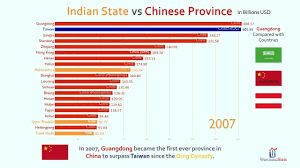
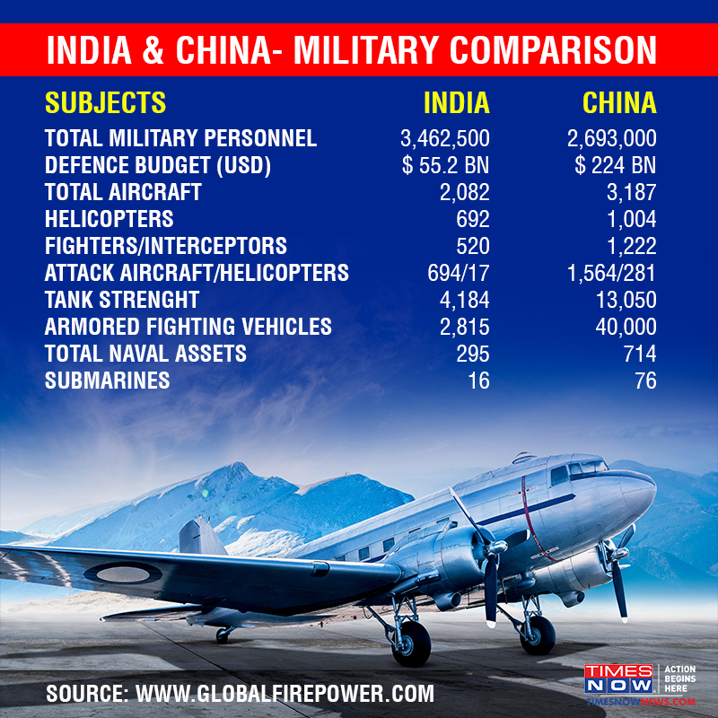
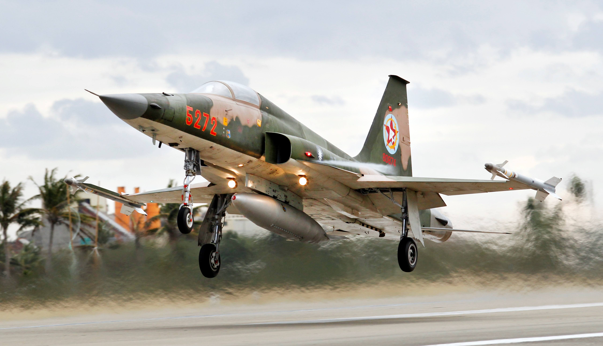

China and India – A comparison

↪China has over 2 million troops employed in active military service compared to 1.3 million on the Indian side
. Its defence budget is four times at USD 225 billion compared to that of India, which is approximately
USD 55 billion.
↪China’s tank strength stands at a stupendous 13,000 plus compared to India’s 4,100 plus. And its armoured fighting vehicles are at a staggering 40,000; India pales into insignificance with just over 2,800. Similarly, it has ten times the rocket projectors at 2050 versus India’s 266.
CHINA AND INDIA A MILITARY COMPARISION

↪As far as prowess at the sea is concerned, China has a total of 714 naval assets compared to 295 of India, with 76 submarines versus 16 owned by India. Our north-eastern neighbour also has three times the number of destroyers at 33 compared with 11 owned by us.
↪China has managed to produce and deploy a wide range of ballistic missiles, ranging from short-range missiles to Intercontinental Ballistic Missiles (ICBMs). India's Defence Research and Development Organization (DRDO) has also been conducting trials of Prithvi-1 (150 km-range) and Prithvi-2 (250 km-range) ballistic missiles, which have been inducted into the armed forces.
CHINESE LAUNCH PADS AND AIR PROWESS

↪China has 3,000 plus total aircraft compared to over 2,000 in the Indian fleet, but importantly, it has two times the number of fighters and interceptors. It also has 507 serviceable airports compared to 346 in India.
↪Since the 1990s, China modernised its air force at a rapid rate. In 1990s, it had 5,000 aircraft but most of the aircraft were obsolete like the Soviet MiG 19s and MiG 21s. China is now upgrading its fleet into new generation aircraft.